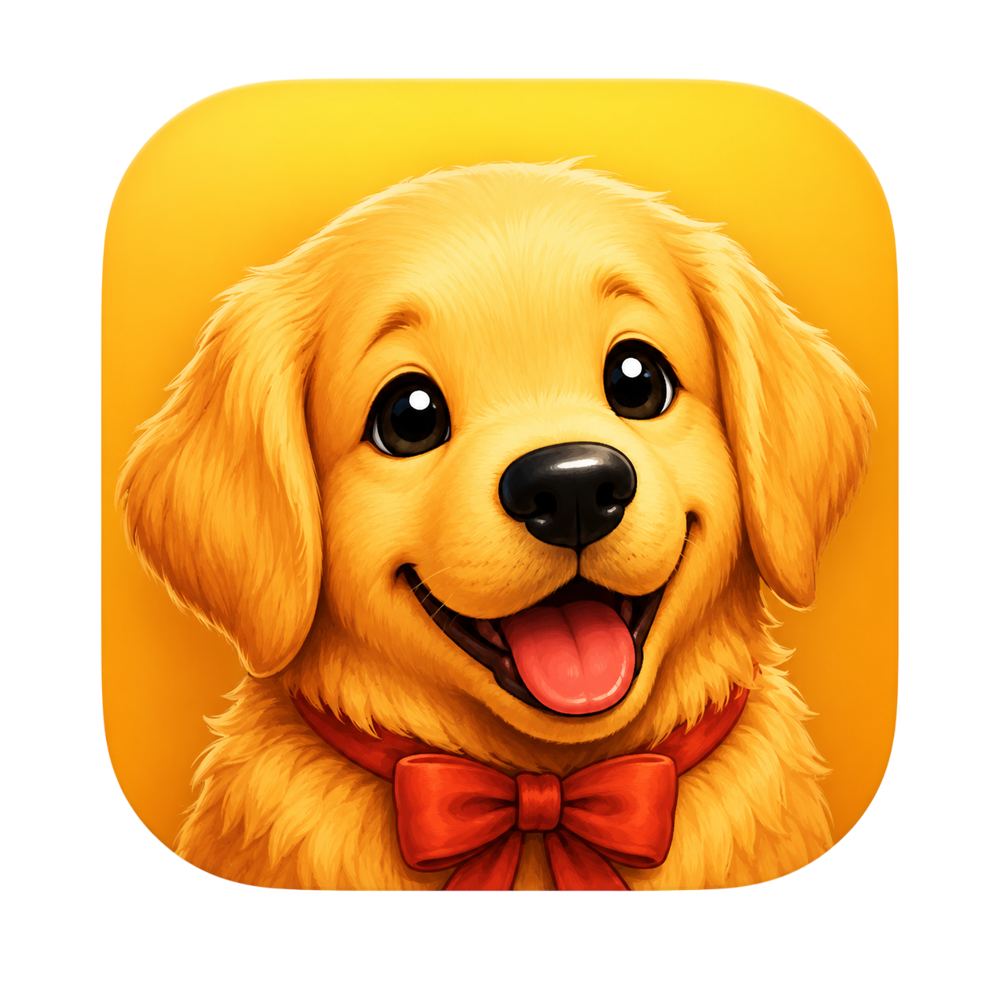
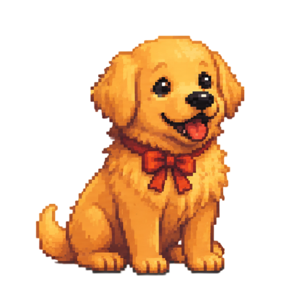

comtriever.
컴퓨터 속 나만의 리트리버
오늘 처음 만났어요
오늘도
네 곁에 있을게
당신과 함께하는 친구

우리 사이
첫 만남
서로 알아가는 중이에요.
쓰다듬기 0
함께 놀기 0
일정 완료 0
리트리버 행동
잠깐이어도 좋아요30%
리트리버와 친해지는 방법
살살 쓰다듬기누른 채 머리·몸·배를 살살 문질러 주세요.
안아주고 내려놓기가만히 0.4초 누른 뒤 옮겨보세요. 움직이다 놓으면 폴짝 날아가 사뿐히 내려와요.
공 다시 던지기공을 주우면 그 자리에서 물고 기다려요. 입 앞의 공을 잡아 다시 던져주세요. 한 번 주울 때마다 배고픔 게이지가 노란색으로 5%p 줄어들고, 0%가 되면 배고파서 쉬어요. 놀이 중에는 그만 버튼으로 끝낼 수 있어요.
창 위에서 쉬기창 윗부분으로 들어 올려 놓아주세요. 창을 옮기면 따라가고, 닫으면 내려와요.
강아지를 우클릭하면 놀이 메뉴를 고정할 수 있어요.앱이 켜져 있을 때 알려드려요.
놓친 일정은 다음에 앱을 열면 다시 확인할 수 있어요.